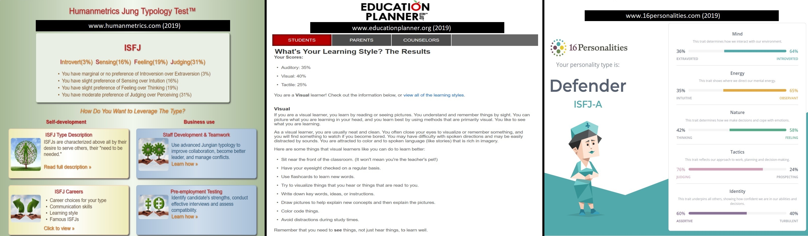

Name:
David Pipczak
Student:
S3805554
Email:
s3805554@student.rmit.edu.au
Born in Australia to both Australian and Polish Parents, I grew up in a tough
working class area and managed to finish Year 11 at High School. I am English
speaking and i have always had a love for computer programming and this is part
of making my dreams come true. Since leaving school i have worked as an electrician
for the past 29 years. I was a junior Boxer and have always had a passion for martial arts.
In my past time i have been trying to teach myself python programming and have completed
some intro to python programming courses at coursera. I love watching movies and eating
out.
The pictures below show the results of three different Myers-Briggs type tests.
Cite:
www.humanmetrics.com ,
www.educationplanner.org ,
www.16personalities.com
The results of the tests and also with reference to my ISFJ rating from
The Myer & Briggs Foundation Chart
shows me that i am only slightly higher visually than i am auditory at learning and have the ability to learn either way.
It shows me i am conservative, realistic, practical and organised, it also shows me that i can sometimes be slightly
introverted. From what i can see i think these traits work well in a team enviroment.
These results can help influence my behaviour in a group, they show me my characteristics, my
areas of strength, and where i can improve. This will allow me to work better and more efficient
within a team and with others, and as i work on where i can improve, this will also benefit the group
and change behaviours.
This information will be useful when forming teams. It will allow you to form a well balanced
team that should work well together, have an even spread of strengths and be efficient as possible.
It can show you or give some understanding how people might react if approached in the wrong way,
can help them fill fulfilled, show you if they are quiet, introverted, extraverted, and if they might lead.
